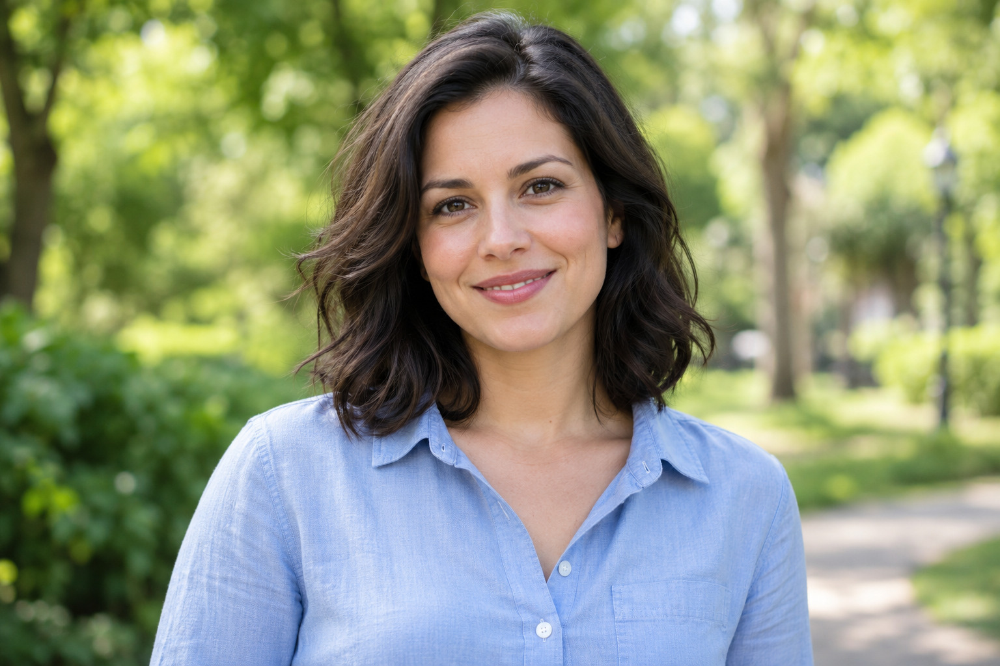
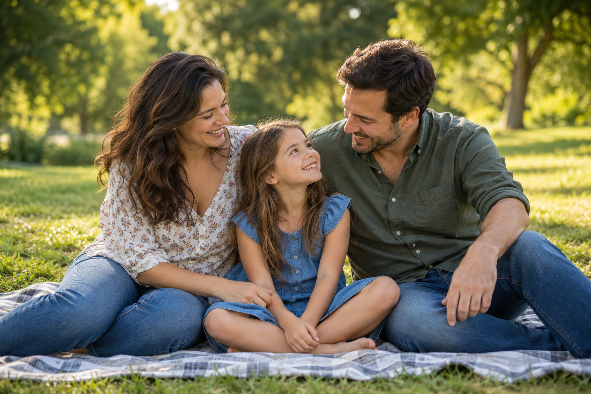

Фотограф Алексей Смирнов

Описание
Алексей Смирнов — фотограф из Уфы с опытом работы 5 лет. Специализируется на портретной и семейной съёмке. Проводит фотосессии в студии и на открытом воздухе.
Перед съёмкой помогает выбрать место, продумать образы и согласовать концепцию. Во время фотосессии подсказывает позы и помогает участникам чувствовать себя свободно перед камерой.
После съёмки выполняет отбор и обработку фотографий. Продолжительность фотосессии и количество готовых снимков согласуются с заказчиком заранее.
Характеристики
- Город: Уфа.
- Специализация: портретная и семейная съёмка.
- Опыт работы: 5 лет.
- Место съёмки: студия или открытая площадка.
- Обработка фотографий: цветокоррекция и ретушь.
- Формат передачи фотографий: электронный.
Галерея

Просмотры: 1240 · Лайки: 96

Просмотры: 980 · Лайки: 74

Просмотры: 760 · Лайки: 61
Базовая ставка: 3 000 рублей в час.